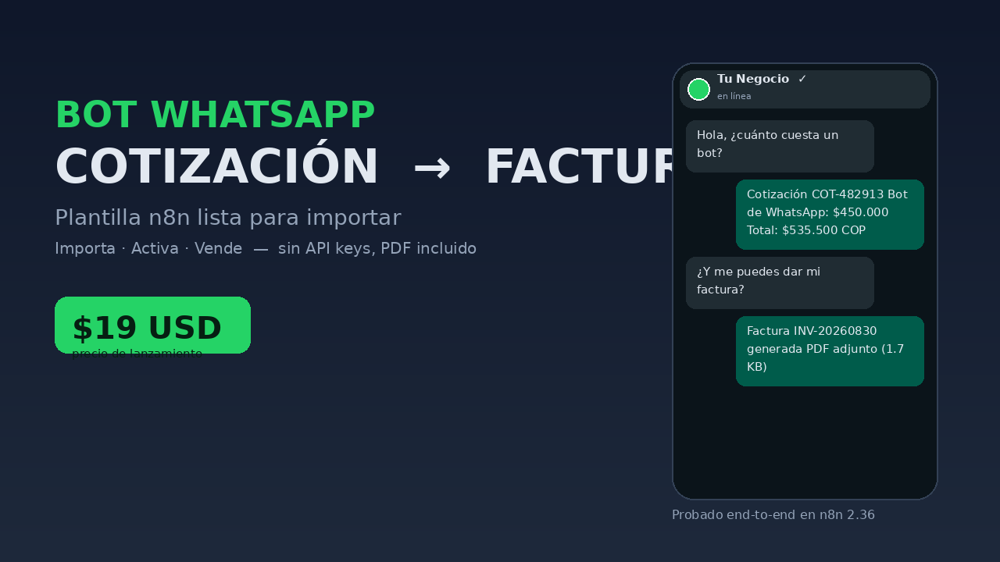
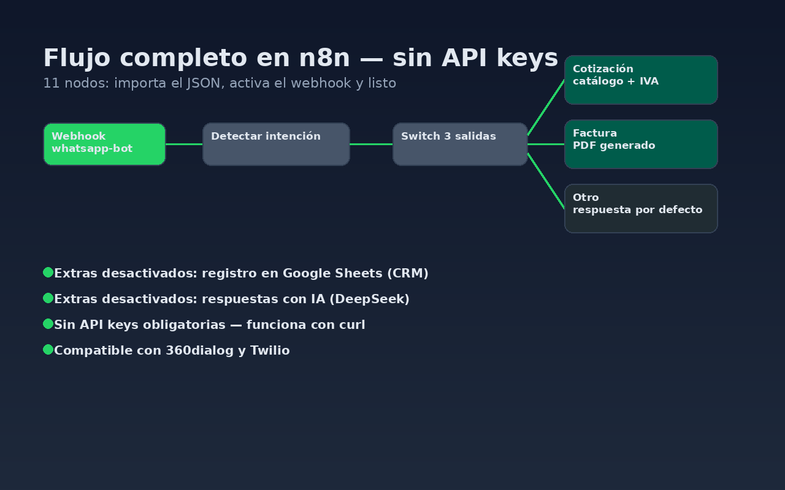
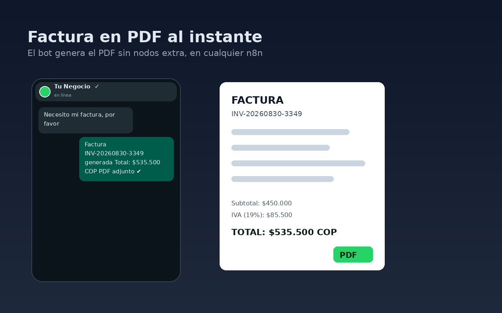

Hola, soy Fredy Rodriguez.
Construyo backend, bots de WhatsApp, flujos n8n y agentes de IA que automatizan lo repetitivo y hacen crecer tu negocio. Python · Go · Rust · n8n · Docker.
Con lo que trabajo a diario
Proyectos seleccionados
🎼 Music21 Partitura Generator
Genera partituras musicales a partir de un set de clases de tono y aplica transposiciones dinámicas.
Ver código →🚀 CI/CD Golang + Docker
Proyecto de pipeline CI/CD para Go en entornos Docker: build, tests y despliegue automatizados.
Ver código →Lo que resuelve negocios
Soluciones que ya corren en producción — no conceptos.

Bot WhatsApp → Cotización → Factura
Responde precios con catálogo e IVA al instante y genera la factura en PDF automáticamente. Sin API keys.
→ Quiero uno igual
Automatización n8n
ETL/ELT, aprobaciones multi-paso, webhooks seguros (HMAC/OAuth2/mTLS) y observabilidad con OpenTelemetry. Docker/Podman.
→ Automatiza tu proceso
Agentes de IA + MCP
Agentes que conectan tus datos con modelos (DeepSeek, Gemini, GPT) y servidores MCP para trabajar con tu catálogo.
→ Construye tu agente¿Tienes algo que automatizar?
Te dejo una primera versión funcionando en días. Hablo español e inglés, respondo rápido.